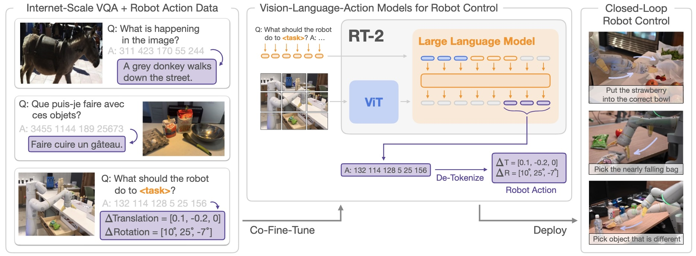
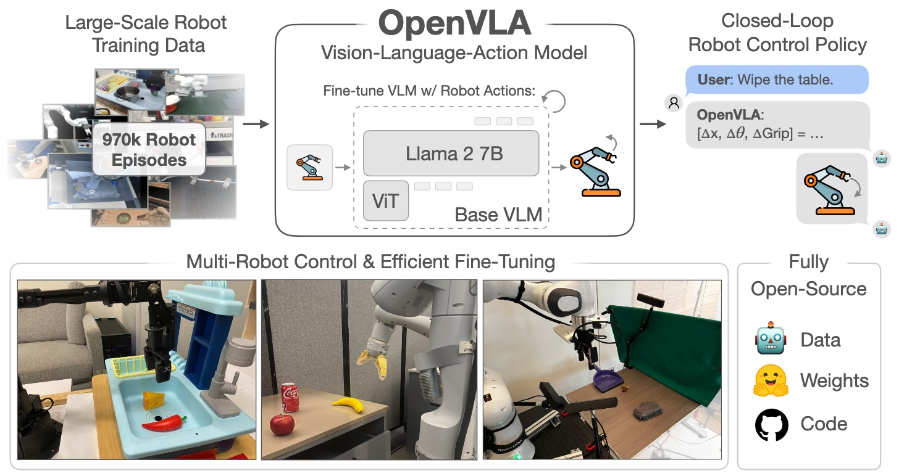
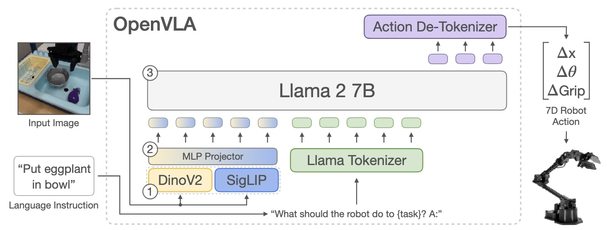
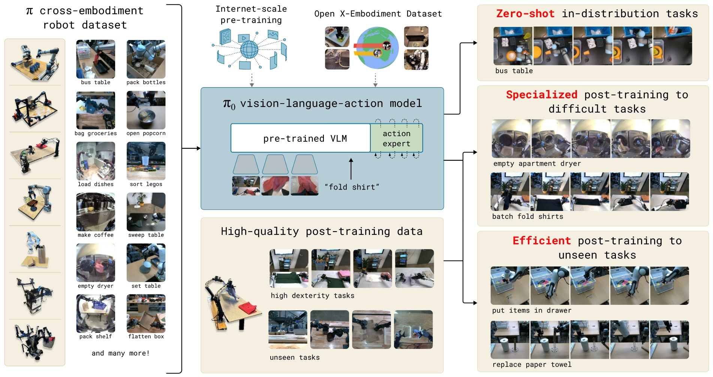
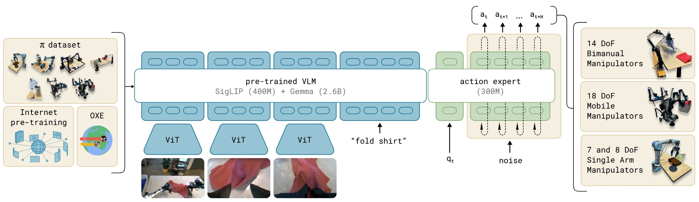
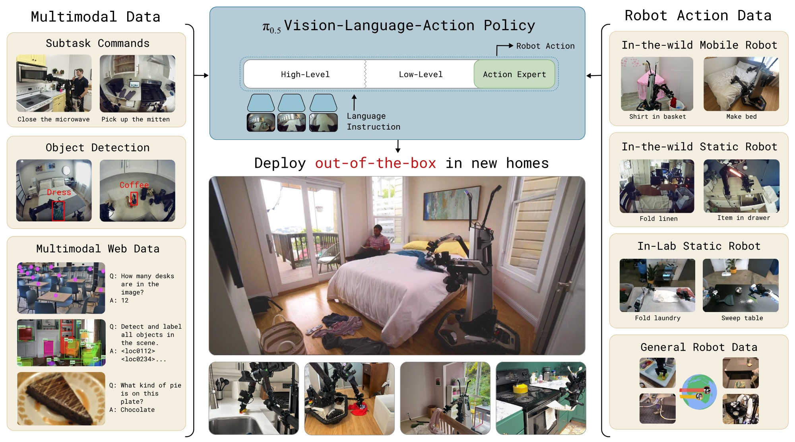
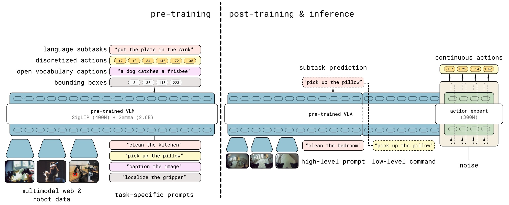
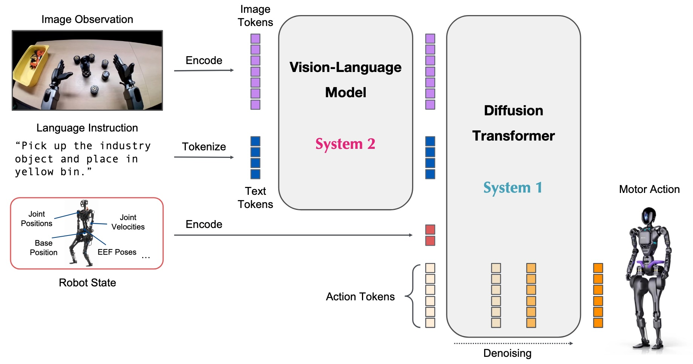

Vision-Language-Action Models
本文记录若干经典 VLA 论文。
Introduction
VLA (Vision-Language-Action Model) 指基于预训练 VLM 构建的通用具身基座模型。VLA 接收当前观测 \(\mathbf o_t\)、当前机器人自身状态 \(\mathbf q_t\) 和文本指令 \(\mathbf c\) 作为输入，输出机器人一个 chunk 的动作 \(\mathbf a_{t:t+H}\). 其中，当前观测可包括多个视角的图像 \(\mathbf I_t^1,\ldots,\mathbf I_t^n\). VLA 的训练采用模仿学习：给定包含「状态-动作」对的数据集 \(\mathcal D\)，最大化动作的对数似然： \[ \max_\theta~\mathbb E_{(\mathbf a_{t:t+H},\mathbf o_t,\mathbf q_t,\mathbf c)\sim\mathcal D}\left[\log \pi_\theta(\mathbf a_{t:t+H}\vert\mathbf o_t,\mathbf q_t,\mathbf c)\right] \] 例如，离散化动作可采用 cross-entropy 损失分类，连续动作则可采用 diffusion/flow 建模。
RT-2
核心思想 首次提出 VLA 的概念，旨在将大规模预训练 VLM 中已有的识别和推理能力带到具身任务中。
整体框架 RT-2 将动作转化为 token 后与 VLM 任务混合训练 (co-fine-tuning).

动作表示 对于 6-DoF 机器人，动作表示为 8 个整数构成的字符串：
1 | |
其中 terminate 为结束符，其余维度均匀量化到 256 bins. 根据采用的 VLM 的不同，用合理的方式从词表中选取 256 个 token 作为 action token 即可。
OpenVLA
简要介绍 OpenVLA 是一个 7B 参数量的开源模型，在 Open X-Embodiment 数据集上预训练，并支持 LoRA 高效微调到新机器人上。

模型架构 VLM 采用 Prismatic-7B（Llama 2 7B 作为 LLM，DinoV2 + SigLIP 作为图像编码器），输出 7 维动作向量。

动作表示 动作向量包括位移 (3)、旋转 (3) 和机械爪开合 (1)。离散化方法与 RT-2 类似：对每个数据集，将 1% 分位数到 99% 分位数的范围均匀划分为 256 个 bins，采用词表中最后 256 个 token 作为 action token.
\(\pi_0\)
核心思想 \(\pi_0\) 采用「预训练+微调」范式，特别强调大规模预训练对模型通用性的重要作用。模型首先在包含多种任务和机器人的大规模数据上预训练，学习通用的机器人控制能力；随后在单独任务或新任务上微调，使之解决复杂问题或新问题。
整体框架 \(\pi_0\) = 多任务多机器人数据 + 大规模预训练 + 高效微调

模型架构 以预训练 VLM 为基础，添加 action expert，采用 flow matching 学习 action chunk.

\(\pi_{0.5}\)
核心思想 尽管 \(\pi_0\) 在通用性上取得了进步，但是面对新场景新任务依然需要微调，阻碍其开放世界下的实际应用，因此 \(\pi_{0.5}\) 特别强调对开放世界的泛化性。为此，作者引入 subtask 的概念，例如将 "clean the kitchen" 转化为 "put the plate in the sink"，实现对动作指令的泛化；另外，作者在预训练阶段将模型连同多模态任务（例如目标检测和 VQA）同步优化，后训练再在机器人操作任务上微调，以提升模型对新场景的泛化能力，实现 out-of-the-box 直接部署。
整体框架 \(\pi_{0.5}\) = \(\pi_0\) + 多模态任务预训练 + 机器人操作任务后训练

模型架构 预训练时，用 tokenizer 将 action 离散化，所有任务均采用分类损失训练；后训练时，在预训练的基础上添加 action expert 并采用 flow matching 学习 action；推理时，先预测 high-level 语义（即 subtasks），再预测 action chunk.

GR00T N1
模型架构 双系统设计：VLM 为 System 2，负责视觉感知和理解指令；DiT 为 System 1，负责将 high-level 语义转换为 low-level 动作。

数据构建 数据金字塔的顶端为真实世界数据，中间为合成数据，底端为互联网视频数据。合成数据包括：
- Neural Trajectories：在真实和模拟器数据上微调图生视频模型，生成 827 hours 的生成视频。
- Simulation Trajectories：使用 DexMimicGen 自动化生成系统将人类演示视频扩充到 6500 hours.
动作标签 由于合成数据缺乏标签，作者采用 latent actions 或采用逆动力学模型 (IDM) 预测 action 作为伪标签。其中 latent actions 的来自一个 VQ-VAE，其编码器接收 \(x_t,x_{t+H}\) 作为输入，输出 latent \(z_t\)；解码器接收 \(x_t,z_t\) 作为输入，重构 \(x_{t+H}\). 由此，可以认为 \(z_t\) 编码了 \([t,t+H]\) 时间内的动作，故称之为 latent actions.
\(\pi_{0.7}\)
TODO